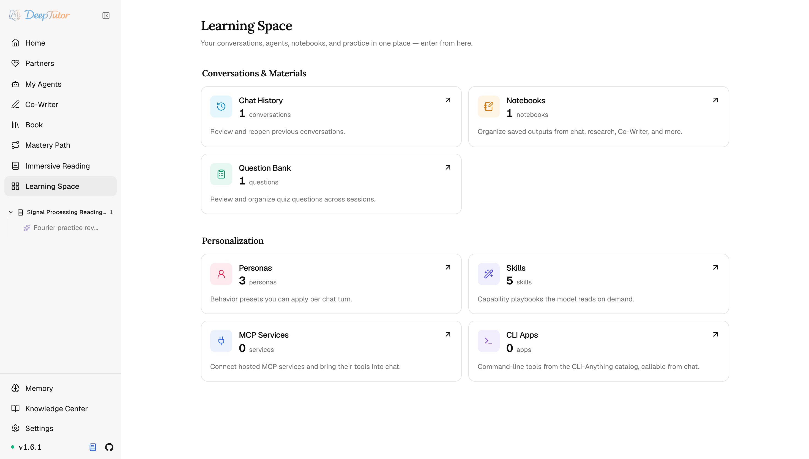

DeepTutor 生態生態概覽
DeepTutor 生態擴充全攻略！5 條路徑不寫一行核心程式碼，Skill、MCP、RAG 分頭說明，附入口指南！
透過 RAG 整合、可複用 Skill、遠端 MCP 服務、沙箱化 CLI App 與 EduHub 擴充 DeepTutor。
原文連結：https://docs.deeptutor.info/zh-cn/ecosystem/
裝好 DeepTutor 之後，很多朋友的第一個問題就是：內建功能夠不夠用？想接自己的檢索源、想加自訂工具，要不要去動原始碼？
答案是：完全不用改一行核心程式碼。
DeepTutor 準備了 5 條擴充路徑：Skill 手冊、MCP（模型上下文協定）服務、命令列應用、RAG（檢索增強生成）整合和 EduHub 社群市場，想加什麼行為、接什麼工具，都有現成的口子。
但是問題來了。這 5 條路徑各自管什麼、裝在哪、由誰來管，如果不先搞清楚，很容易裝了一堆東西卻不知道去哪裡啟用。
接下來就把這 5 條擴充路徑逐一走過，順便告訴你它們都藏在產品的哪個角落。

五條擴充路徑
| 擴充 | 增加什麼 | 由誰管理 |
|---|---|---|
| Skill | 模型在需要某套流程時讀取的 SKILL.md 手冊 | 內建、本機、ClawHub 或 EduHub |
| MCP 服務 | 託管或部署級 MCP 伺服器暴露的工具 | 遠端服務按帳號；部署註冊表由管理員管理 |
| CLI App | 安裝在伺服器、以沙箱工具形式進入對話的命令列程式 | 管理員安裝和授權；獲准帳號執行 |
| RAG 整合 | 知識庫背後的本機、智慧代理式、遠端或即時資料庫檢索 | 部署設定 + 每個 KB 的選擇 |
| EduHub | 面向 Skill 的社群發現、版本、匯入與發布 | 社群作者發布；使用者審閱並匯入 |
每條路徑的信任邊界不同。RAG 整合負責檢索，Skill 是指令，MCP 服務是遠端工具邊界，CLI App 則是在主機安裝的程式碼；EduHub 分發 Skill，但不成為它的執行環境。因此 DeepTutor 為各條路徑分別設計設定、安裝、憑據、沙箱與授權模型。
我給大家翻譯一下：能檢索的歸 RAG，下指令的歸 Skill，連遠端服務的歸 MCP，裝在本機的歸 CLI App，EduHub 只負責分發不負責執行，各管各的，井水不犯河水。
它們在產品裡的位置
知識引擎從知識中心選擇；Skill、MCP 服務和 CLI App 從學習空間管理，EduHub 則嵌在 Skill 匯入器裡。啟用後，工具透過與內建工具相同的發現流程進入主頁智慧代理。
對經常折騰 AI 工具的朋友來說，這套設計可以說非常香：擴充裝得再多，入口永遠只有那幾個，不會裝著裝著就找不到北。
下一步
檢索本身是擴充點時，先看 RAG 整合；要教模型一套可複用流程時看 Skill 擴充，連線帳號型線上服務時看 MCP 擴充，需要真實命令列程式時看 CLI-App 擴充。發現或發布社群 Skill 則進入 EduHub。
實際效果還會受到模型、提示詞以及具體使用場景的影響，建議大家結合自己的需求實際體驗評估。